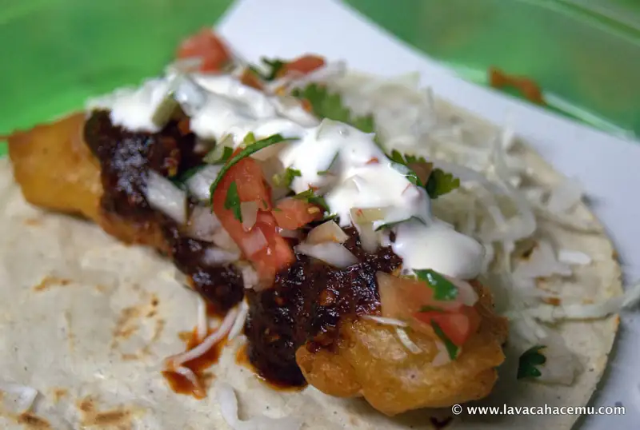
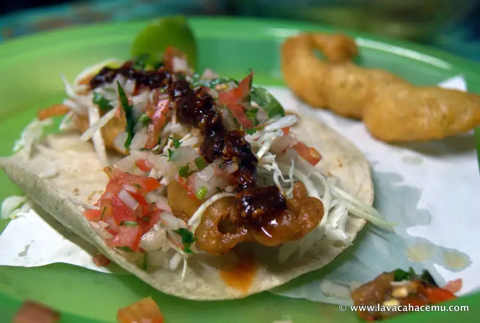

Yujajai Ensenada B. C. restaurants revisits
{kind=link}

{kind=link}

{kind=link}
Us humans are creatures of habit, some habits are bad and those it would be better to not have; but is eating good food a bad habit? naaah, this is one habitual spot that we absolutely love to come back to every time we visit Ensenada. Last time, we had some more restaurant-like dishes that they prepare beautifilly, but this time we had some more street-food type fare: fish and shrimp tacos and some ceviche! You know.. yes, you could walk accross the street and get some ceviche that's more artfully done (I'll post about that place in a later post), but if you want some traditional tasting ceviche, this place is hard to beat and yes, you could go to that little tostada stand that Anthony Bourdain made famous and pay something in the order of 4 dollars per tostada, but this place, only serves fish or shrimp ceviche and only a little over a dollar per unit. And he fish tacos? man, oh, man... warm, crunchy exterior leads into soft fish inside, all wrapped in a corn tortilla, you.. DID know that Ensenada is the birthplace of the fish taco, right?
Pictured is a fish ceviche tostada, fish taco and a shrimp taco; yes, that other fried thingy in the last picture is another shrimp, these tacos are so over-filled, you'll only need 2 or 3 to fill your gullet (but you'll want more!)